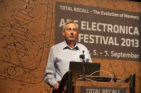

Découvrez Michael Buckland - Architecte de l’information. Explorez la brillante carrière et les contributions de Michael Buckland en naviguant sur les différentes sections du site. Chercheur émérite, écrivain et enseignant, Michael a été un pionnier dans l’architecture de l’information.
Michael Buckland est né en 1941 en Angleterre. Il fait des études d’histoire à l’université d’Oxford puis devient stagiaire dans la plus prestigieuse bibliothèque d’Oxford, la bibliothèque bodléienne. Après avoir obtenu son diplôme professionnel de bibliothécaire à l’université de Sheffield en 1965, il rejoint l’équipe de la section recherche en bibliothéconomie de l’université de Lancaster, un an après sa création. Responsable du service de recherche en bibliothéconomie, il s’intéresse à une série d’études sur les usages des ouvrages, leur disponibilité, ainsi que sur les techniques de gestion de bibliothèque (bibliothéconomie).
1975 : Book availability and the library user, New York : Pergamon Press. Cet ouvrage évoque la disponibilité des livres en bibliothèque et ainsi les conséquences pour ses utilisateurs. Michael Buckland examine comment la disponibilité des livres influence l'utilisation des bibliothèques et les besoins des usagers.
1983 : Library services in theory and context, New York : Pergamon Press. Ce livre propose une réflexion théorique sur les services de bibliothèque, situant ces services dans leur contexte plus large. Buckland examine les fondements théoriques des services de bibliothèque et explore leur évolution en fonction du contexte sociétal.
1991 : Information and information systems, New York : Praeger. Dans cet ouvrage, Buckland fait une analyse des systèmes d’informations. Il évoque aussi les différentes significations de l’information.
1992 : Redesigning library services: a manifesto, Chicago : American Library Association. Ce manifeste propose une vision audacieuse pour la refonte des services de bibliothèque. Buckland explore les changements nécessaires dans la prestation des services pour répondre aux évolutions technologiques et aux besoins changeants des utilisateurs.
2006 : Emanuel Goldberg and his knowledge machine: information, invention, and political forces, Westport, Conn : Libraries Unlimited. New directions in information management. Cet ouvrage parle d’Emanuel Goldberg et son travail novateur dans le domaine de la recherche électronique de documents. Buckland nous parle du pouvoir des forces politiques qui ont influencé le développement de la machine à connaissances de Goldberg.
2017 : Information and society, Cambridge, Massachusetts : The MIT Press. The MIT Press essential knowledge series. Dans cet ouvrage de la série MIT Press Essential Knowledge, Buckland examine la relation entre l'information et la société. Il explore comment l'information façonne et est façonnée par les structures sociales, culturelles et politiques.
1991 : Information as Thing Dans cet article, Buckland explore la notion d'information en tant qu'entité matérielle, remettant en question les définitions traditionnelles d'information et suggérant une approche plus concrète.
1997 : What is a "Document"? Buckland examine la définition du terme "document" dans le contexte de la science de l'information, discutant des différentes interprétations possibles et de leur importance pour le domaine.
2012 : What kind of science can information science be? Buckland explore la nature de la science de l'information en se demandant quel type de science elle peut être, abordant des questions fondamentales sur la portée et la méthodologie de ce domaine.
Explorez visuellement les idées de Michael Buckland.
Pour m’aider à la réalisation du site, la chaîne YouTube Pierre Giraud, le site web Developper Mozilla ainsi que Chat GPT m’ont été d’une grande aide. La difficulté pour moi lors de la construction du site a été que je n'ai pas pris de template et donc j'ai dû tout réaliser de A à Z. Ce site onepage permet d’en savoir davantage sur Michael Buckland, acteur majeur dans le domaine des sciences de l’information. J'ai opté pour un site simple et épuré, facile de navigation à l'image de Michael Buckland, qui était un homme simple.